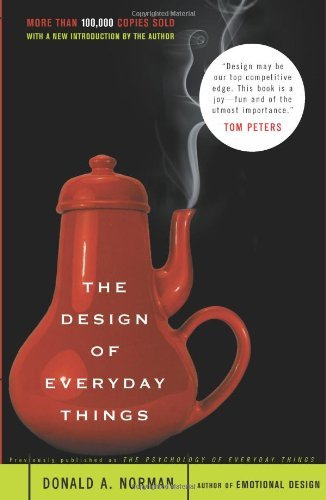

The design of everyday things


“Somehow, when a device as simple as a door has to come with an instruction manual– even a one-word manual– then it is a failure, poorly designed.”
Since reading this book, I’ve noticed that there are many everyday objects I struggle to use, even objects I touch every day. Microwaves, light switches, doors… So it was a relief to learn that maybe it’s not my fault.
What does this book have to say about design?
Let’s say you’re trying to open a door. If the door has a flat metal panel, you’ll intuitively push; if the door has a handle that begs to be pulled, you’ll pull. Any contradiction between the action suggested by the door handle and the actual operation of the door will cause confusion and dismay.
Design should be intuitive! One strategy is to exploit natural mappings between controls and actions. For example, consider opening and closing a car window. The window goes down when the switch goes down, and up when the switch goes up. You don’t have to remember which direction is which because it follows naturally from the design. You don’t even have to read a label (a huge advantage when your eyes are meant to be on the road).
You can also add constraints to prevent unintended actions. One example I’ve encountered as a computer programmer: When you want to delete a repository of code on GitHub, the website not only warns you that you’re deleting it forever, it makes you type out the full name of what you’re trying to delete before actually deleting it. The idea is to make sure your code doesn’t get deleted unless you really want to get rid of it.
The author makes the point that user-friendly design is not a trivial issue. Good design makes correct actions easy and mistakes difficult, which matters for important things like control panels in airplanes and nuclear power plants. Human error is inevitable; even very experienced humans will make some mistakes in the long run. A design that fails to discourage or even encourages mistakes is a deeply flawed design.
The Design of Everyday Things changed the way I think about the minor design flaws I encounter on a daily basis, as well as the way I think about designing user interfaces when I write software. If you’re someone who designs things, this book will give you a lot to think about!